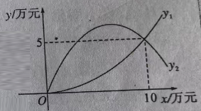

p31 白鹅投资分配求最大总利润
最大利润问题
待定系数法二次函数配方求最值利润分配
★★★☆

📷 点击查看原图
某班同学前往养殖大户王大伯家开展调研活动，根据王大伯往年的饲养经验，他们发现饲养 A 种白鹅获得的利润 y1（万元）与投资金额 x（万元）之间的函数关系式为 y1=ax2，饲养 B 种白鹅获得的利润 y2（万元）与投资金额 x（万元）之间的函数关系式为 y2=−3ax2+bx。画出两函数的图象如图所示（两图象交于点 (10, 5)）。
（1）求函数 y1、y2 的表达式；
（2）王大伯计划明年投资 10 万元饲养 A、B 这两种白鹅。根据以往经验，如何分配资金，可使得总利润最大？最大总利润是多少？
📌 知识点总结（点击展开／收起）
📌 知识点总结
| 知识点 | 说明 |
|---|
| 待定系数法 | 已知图象交点坐标，代入函数式建立方程，解出未知系数 a、b |
| 交点含义 | 两图象交于 (10, 5)，即 x=10 时 y1=y2=5 |
| 总利润 | 总利润 = A 种利润 + B 种利润，且两投资额之和 =10 万元 |
| 二次函数配方求最值 | W=a(x−h)2+k，a<0 开口向下，顶点 (h, k) 为最大值点 |
✍️ 解题过程
第（1）问：求 y1、y2 的表达式
第一步：由交点求 a。两图象交于点 (10, 5)，说明 x=10 时 y1=5。代入 y1=ax2：
5=a×102=100a⟹a=1005=201
y1=201x2
第二步：由交点求 b。同样 x=10 时 y2=5，代入 y2=−3ax2+bx（其中 a=201）：
5=−3×201×102+10b=−15+10b⟹10b=20⟹b=2
y2=−203x2+2x
✅（1）答案：y1=201x2，y2=−203x2+2x
第（2）问：投资 10 万元如何分配
第一步：设未知数。设饲养 A 种白鹅投资 x 万元，则饲养 B 种白鹅投资 (10−x) 万元。
第二步：写总利润。总利润 W = A 种利润 + B 种利润：
W=y1(x)+y2(10−x)=201x2+[−203(10−x)2+2(10−x)]
第三步：化简 B 种利润。先展开 y2(10−x)：
−203(10−x)2+2(10−x)=−203(100−20x+x2)+20−2x=−15+3x−203x2+20−2x=−203x2+x+5
第四步：合并同类项。
W=201x2+(−203x2+x+5)=−202x2+x+5=−101x2+x+5
第五步：配方求最值。
W=−101(x2−10x)+5=−101(x2−10x+25)+2.5+5=−101(x−5)2+7.5
抛物线开口向下（−101<0），顶点 (5, 7.5) 是最高点，且 x=5 在 0≤x≤10 内，所以当 x=5 时总利润最大。
x=5 时，Wmax=7.5
检验（端点与顶点对比）：x=0（全投 B，10 万）时 W=y2(10)=5；x=10（全投 A）时 W=y1(10)=5；x=5 时 W=y1(5)+y2(5)=1.25+6.25=7.5。确实 x=5 时最大。
图：y1=201x2（蓝，开口向上）与 y2=−203x2+2x（绿，开口向下）交于 (10, 5) 与原点 O 两点
✅（2）答案：A、B 两种白鹅各投资 5 万元，最大总利润为 7.5 万元